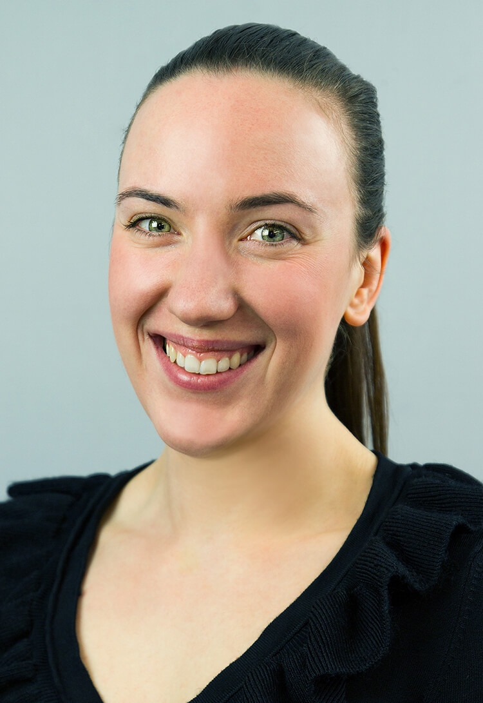
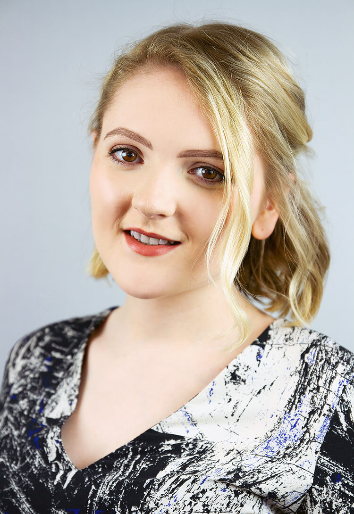
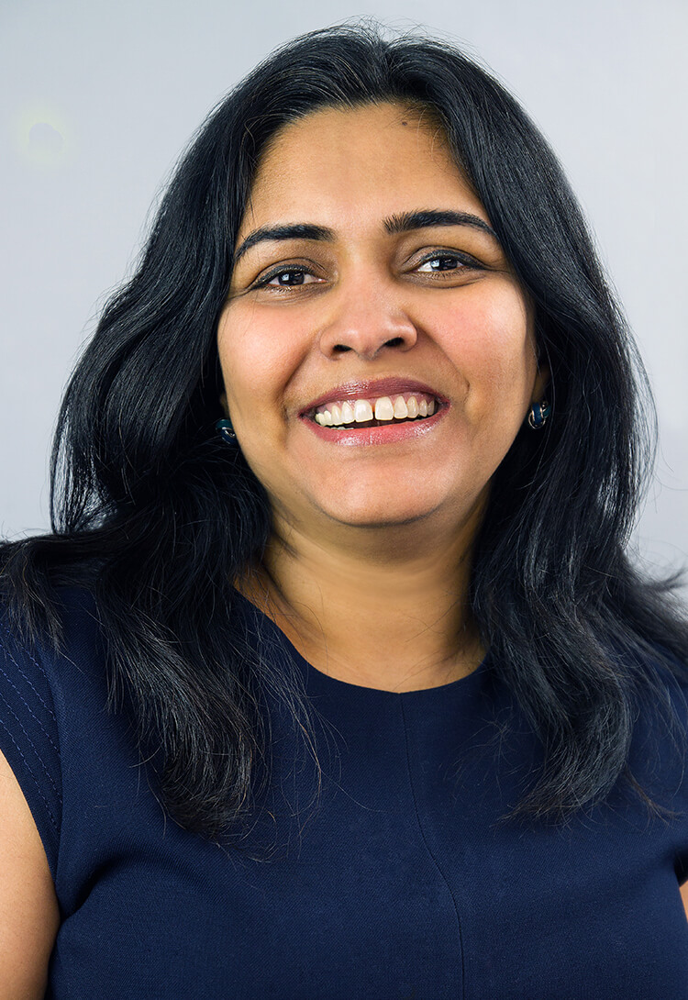
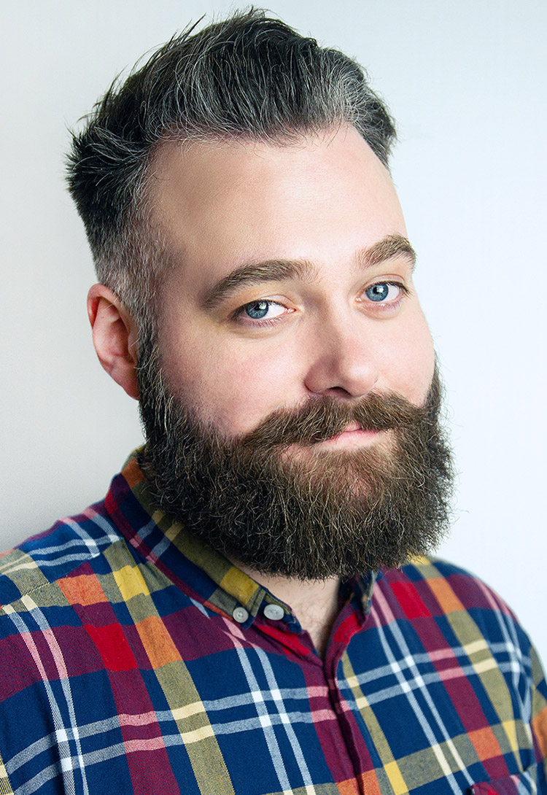
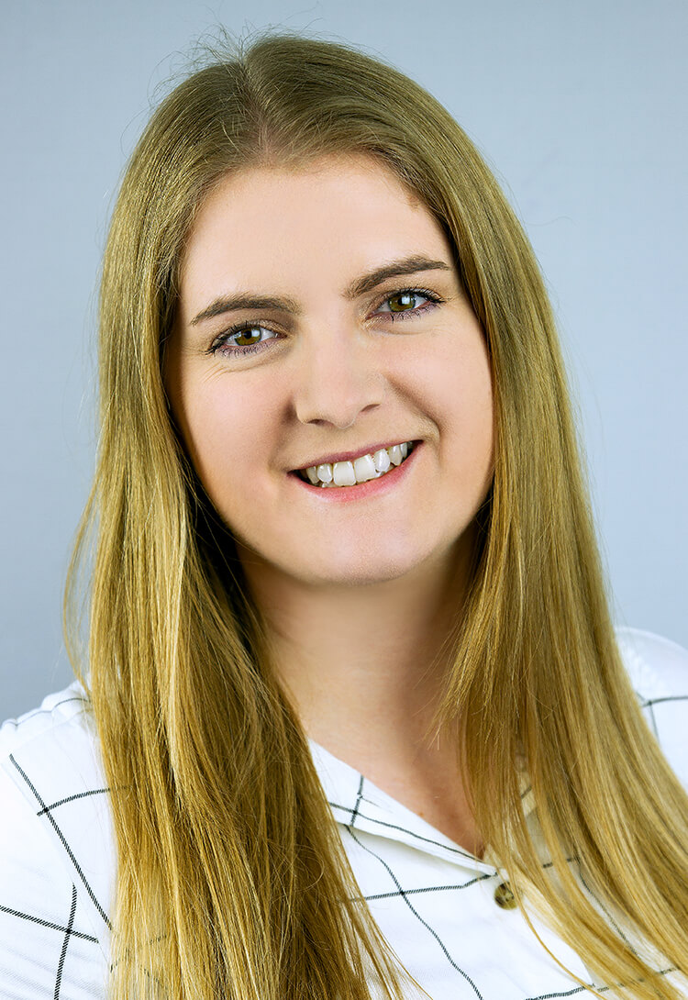
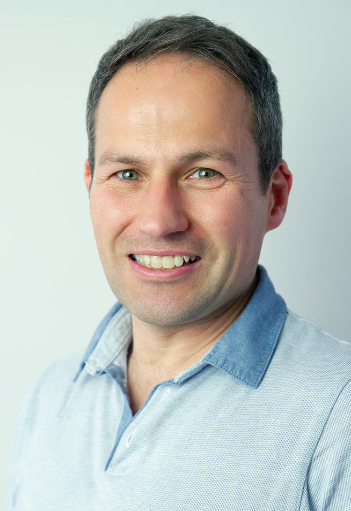
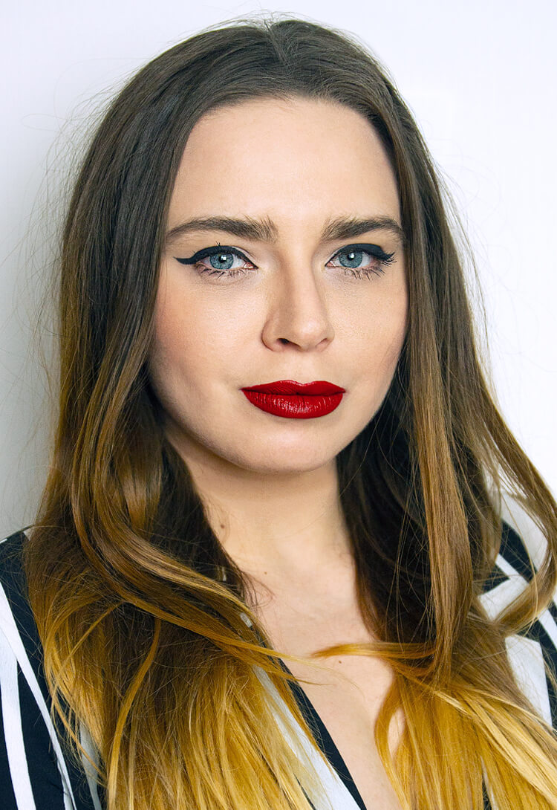

Headshots
A selection of portraits of friends and colleagues taken during my time at Sodexo. They are part of various employee engagement campaigns we created internally. I used different equipment, light settings, and locations throughout the series. I also included my own self-portrait which I actually shot in an improvised studio setting, in my home.







